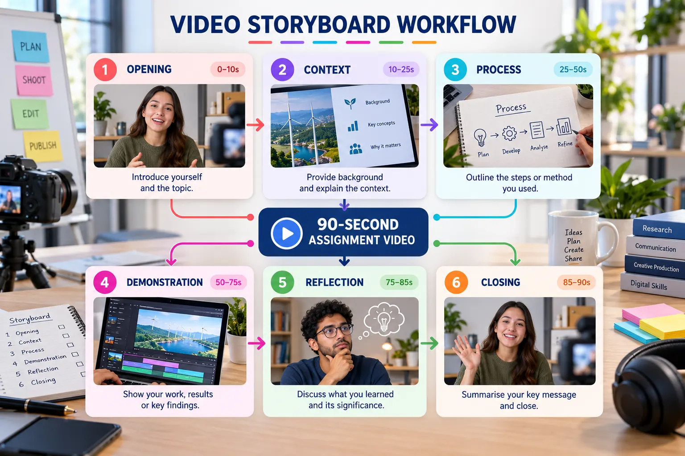

Video Planning and Storyboarding
Convert an assignment brief into a timed visual plan before recording or editing.

Five planning questions
- Purpose: What should the viewer understand?
- Audience: What does the viewer already know?
- Evidence: Which screens or results prove the claim?
- Sequence: In what order should the evidence appear?
- Action: What should the viewer do or remember at the end?
Recommended 90-second storyboard
| Scene | Time | Purpose | Suggested evidence |
|---|---|---|---|
| Opening | 0–10 s | Introduce the project | Title and final interface |
| Context | 10–25 s | Explain the problem and user | Problem statement or scenario |
| Process | 25–50 s | Show how the solution was created | GitHub, Stitch or Figma evidence |
| Demonstration | 50–75 s | Prove that the outcome works | Published website or prototype |
| Reflection | 75–85 s | Evaluate learning | One challenge and improvement |
| Closing | 85–90 s | Reinforce the result | Project name and verified URL |
Create the storyboard
List the required evidence
Identify the repository, prototype, website and reflection that must appear.
Sketch each scene
Use a simple thumbnail, narration note and duration rather than a polished design.
Check the total duration
Protect enough time for viewers to read labels and understand the demonstration.
Remove repetition
Every scene must add new information or evidence.
Storyboard deliverable
- Six timed scenes.
- A stated visual source for every scene.
- A clear narration purpose.
- A total planned duration of 60–90 seconds.